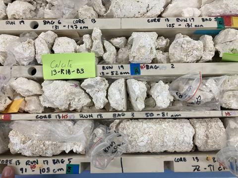
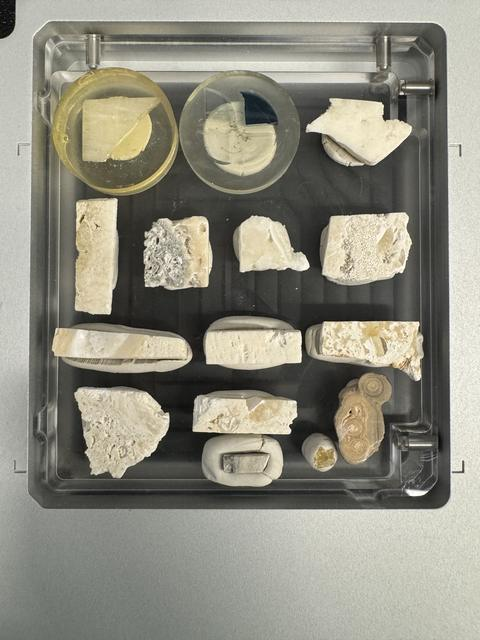
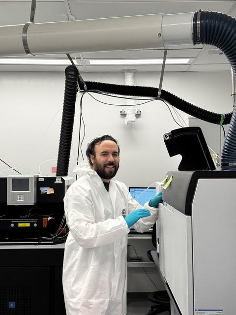
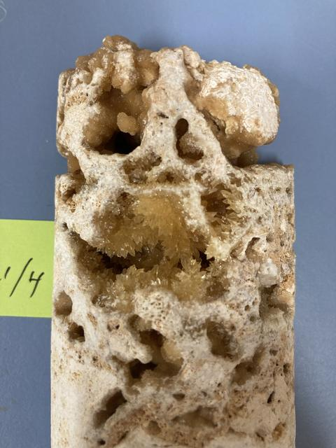
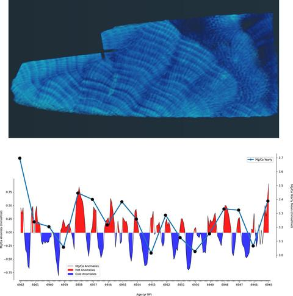

I study how reef systems and sea level have changed through time by pairing high-precision U–Th geochronology, carbonate systems, and coral paleoclimate records (including ENSO) with transparent, Python-based workflows. I also work on meteoric calcite in altered fossil corals. I am founder and scientific director of SPICe Lab SpA (Lanco, Los Ríos, Chile, founded 2025). Isotope analyses are run at The University of Queensland; SPICe Lab does not have its own laboratory.

Seasonal to multi-decadal reconstructions from coral trace elements and isotopes (e.g., Mg/Ca, Li/Mg) measured by LA-ICP-MS and complementary tools.

High-precision dating of carbonates, including meteoric calcite phases in altered fossil corals, to refine Holocene sea-level histories.

Instrument optimization, standards and QC design, and REE/trace-element workflows at ultra-low levels with reproducible data-reduction notebooks.

U–Th dating of meteoric calcite in highly altered fossil corals. Trace-element screening, micro-sampling, and open-system checks improve chronologies and reduce uncertainty.

Two ~60-year snapshots at ~6.9 and 5.2 ka from fossil corals. Laser profiles of Mg, Sr, Mn, and REEs test ENSO and monsoon behavior and link climate swings to coastal water quality.